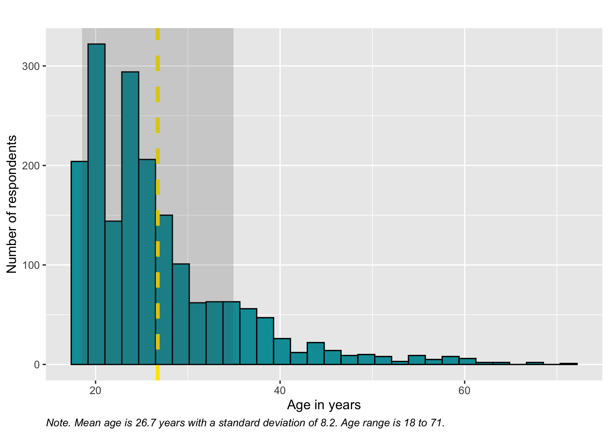
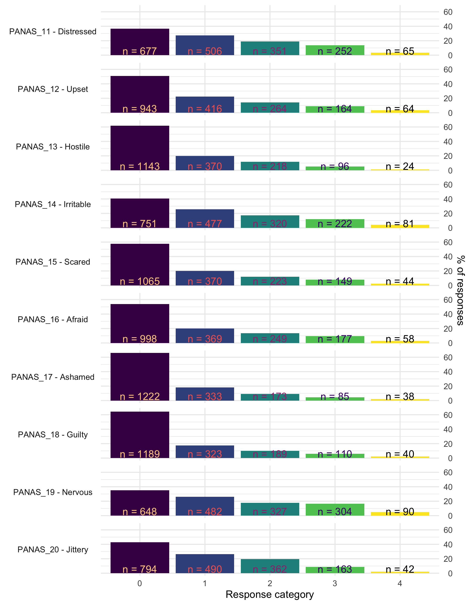
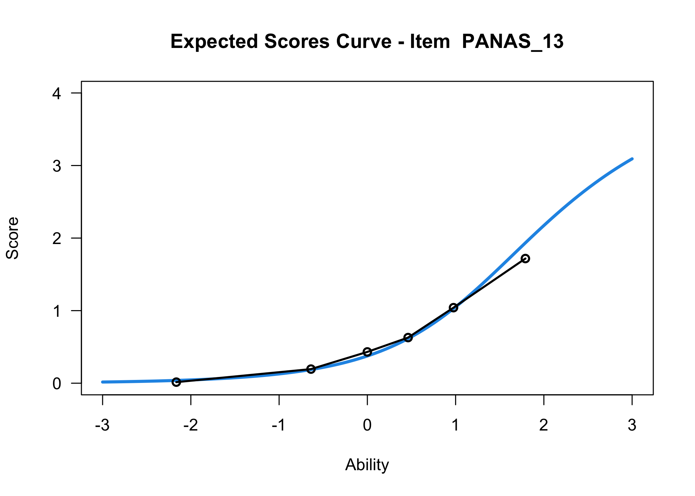
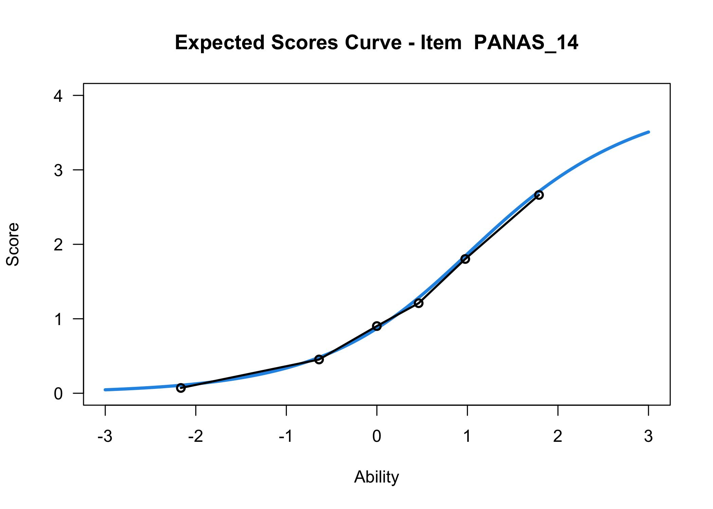
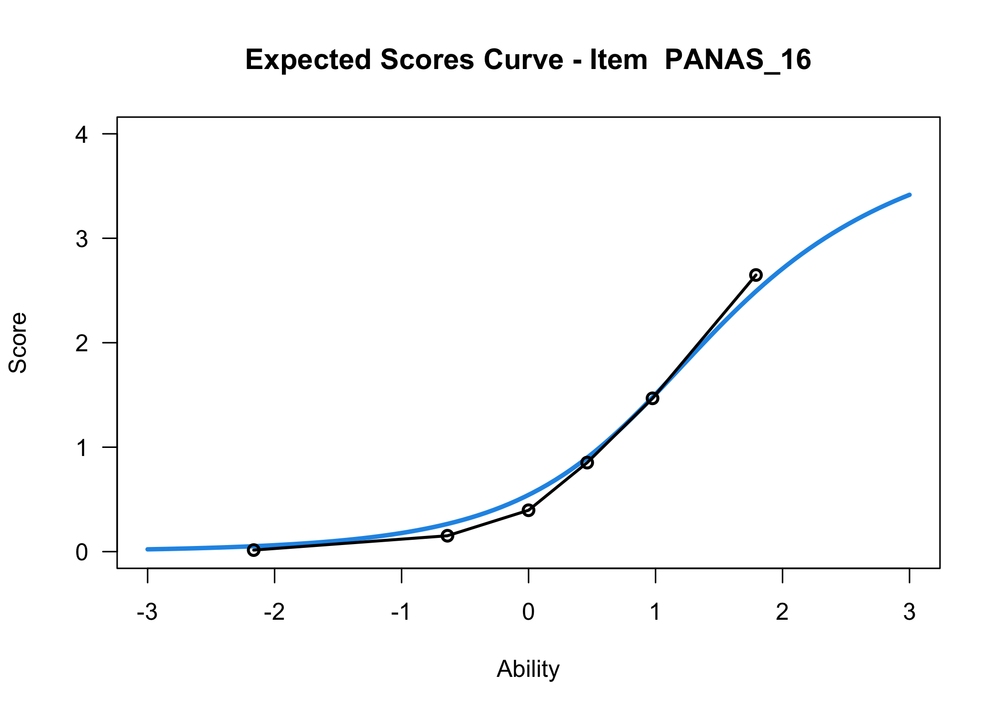
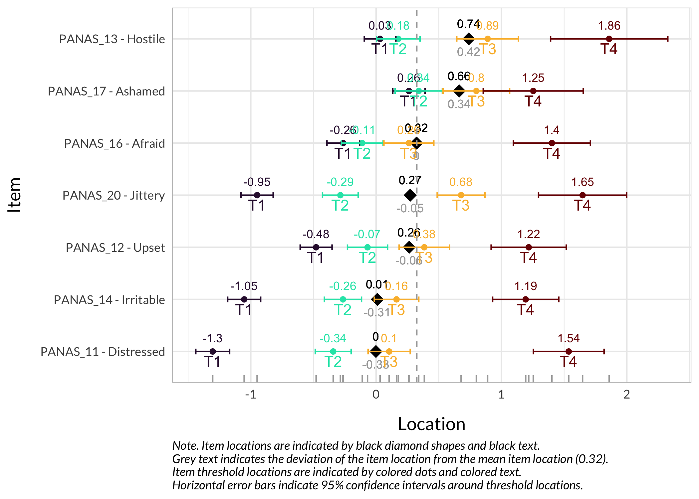

This vignette will walk through a sample analysis using an open dataset with polytomous questionnaire data. This will include some data wrangling to structure the item data and itemlabels, then provide examples of the different functions. The full source code of this document can be found either in this repository or by clicking on </> CODE at the top of this page. You should be able to use the source code “as is” and reproduce this document locally, as long as you have the required packages installed. This page and this website are built using the open source publishing tool Quarto.
One of the aims with this package is to simplify reproducible psychometric analysis to shed light on the measurement properties of a scale, questionnaire or test. In a paper recently made available as a preprint (Johansson et al., 2023), our research group propose that the basic aspects of a psychometric analysis should include information about:
Unidimensionality
Response categories
Invariance
Targeting
Measurement uncertainties (reliability)
We’ll include several ways to investigate these measurement properties, using Rasch Measurement Theory. There are also functions in the package less directly related to the criteria above, that will be demonstrated in this vignette.
Please note that this is just a sample analysis to showcase the R package. It is not intended as a “best practice” psychometric analysis example.
You can skip ahead to the Rasch analysis part in Section 3 if you are eager to look at the package output :)
There is a separate GitHub repository containing a suggested template to simplify using the RISEkbmRasch package when conducting a reproducible Rasch analysis in R: https://github.com/pgmj/RISEraschTemplate
1 Getting started
Since the package is intended for use with Quarto, this vignette has also been created with Quarto. A “template” .qmd file is available that can be useful to have handy for copy&paste when running a new analysis. You can also download a complete copy of the Quarto/R code to produce this document here.
Loading the RISEkbmRasch package will automatically load all the packages it depends on. However, it could be desirable to explicitly load all packages used, to simplify the automatic creation of citations for them, using the grateful package (see Section 12).
Quarto automatically adds links to R packages and functions throughout this document. However, this feature only works properly for packages available on CRAN. Since the RISEkbmRasch package is not on CRAN the links related to functions starting with RI will not work.
1.1 Loading data
We will use data from a recent paper investigating the “initial elevation effect” (Anvari et al., 2022), and focus on the 10 negative items from the PANAS. The data is available at the OSF website.
Code
df.all<-read_csv("https://osf.io/download/6fbr5/")# if you have issues with the link, please try downloading manually using the same URL as above# and read the file from your local drive.# subset items and demographic variablesdf<-df.all%>%select(starts_with("PANASD2_1"),starts_with("PANASD2_20"),age,Sex,Group)%>%select(!PANASD2_10_Active)%>%select(!PANASD2_1_Attentive)
The glimpse() function provides a quick overview of our dataframe.
We have 1856 rows, ie. respondents. All variables except Sex and Group are of class dbl, which means they are numeric and can have decimals. Integer (numeric with no decimals) would also be fine for our purposes. The two demographic variables currently of class chr (character) will need to be converted to factors (fct), and we will do that later on.
(If you import a dataset where item variables are of class character, you will need to recode to numeric.)
1.2 Itemlabels
Then we set up the itemlabels dataframe. This could also be done using the free LibreOffice Calc or MS Excel. Just make sure the file has the same structure, with two variables named itemnr and item that contain the item variable names and item description. The item variable names have to match the variable names in the item dataframe.
Variables for invariance tests such as Differential Item Functioning (DIF) need to be separated into vectors (ideally as factors with specified levels and labels) with the same length as the number of rows in the dataset. This means that any kind of removal of respondents/rows with missing data needs to be done before separating the DIF variables.
We need to check how the Sex variable has been coded and which responses are present in the data.
CONSENT REVOKED DATA EXPIRED Female Male
2 1 896 955
Prefer not to say
2
Since there are only 5 respondents using labels outside of Female/Male (too few for meaningful statistical analysis), we will remove them to have a complete dataset for all variables in this example.
Sometimes age is provided in categories, but here we have a numeric variable with age in years. Let’s have a quick look at the age distribution using a histogram, and calculate mean, sd and range.
Code
### simpler version of the ggplot below using base R function hist()# hist(df$age, col = "#009ca6")# abline(v = mean(age, na.rm = TRUE))# # df %>% # summarise(Mean = round(mean(age, na.rm = T),1),# StDev = round(sd(age, na.rm = T),1)# )ggplot(df)+geom_histogram(aes(x =age), fill ="#009ca6", col ="black")+# add the average as a vertical linegeom_vline(xintercept =mean(df$age), linewidth =1.5, linetype =2, col ="orange")+# add a light grey field indicating the standard deviationannotate("rect", ymin =0, ymax =Inf, xmin =(mean(df$age, na.rm =TRUE)-sd(df$age, na.rm =TRUE)), xmax =(mean(df$age, na.rm =TRUE)+sd(df$age, na.rm =TRUE)), alpha =.2)+labs(title ="", x ="Age in years", y ="Number of respondents", caption =glue("Note. Mean age is {round(mean(df$age, na.rm = T),1)} years with a standard deviation of {round(sd(df$age, na.rm = T),1)}. Age range is {min(df$age)} to {max(df$age)}."))+theme(plot.caption =element_text(hjust =0, face ="italic"))

Age also needs to be a separate vector, and removed from the item dataframe.
Code
dif.age<-df$agedf$age<-NULL
There is also a grouping variable which needs to be converted to a factor.
With only item data remaining in the dataframe, we can easily rename the items in the item dataframe. These names match the itemlabels variable itemnr.
No missing data in this dataset. If we had missing data, we could also use RImissingP() to look at which respondents have missing data and how much.
2.2 Overall responses
This provides us with an overall picture of the data distribution. As a bonus, any oddities/mistakes in recoding the item data from categories to numbers will be clearly visible.
Most R packages for Rasch analysis require the lowest response category to be zero, which makes it necessary for us to recode our data, from using the range of 1-5 to 0-4.
Now, we can also look at the raw distribution of sum scores. The RIrawdist() function is a bit crude, since it requires responses in all response categories to accurately calculate max and min scores.
We can see a floor effect with 11.8% of participants responding in the lowest category for all items.
2.2.2 Guttman structure
While not really necessary, it could be interesting to see whether the response patterns follow a Guttman-like structure. Items and persons are sorted based on lower->higher responses, and we should see the color move from yellow in the lower left corner to blue in the upper right corner.
In this data, we see the floor effect on the left, with 11.8% of respondents all yellow, and a rather weak Guttman structure. This could also be due to a low variation in item locations/difficulties. Since we have a very large sample I added a theme() option to remove the x-axis text, which would anyway just be a blur of the 1851 respondent row numbers. Each thin vertical slice in the figure is one respondent.
2.3 Item level descriptives
There are many ways to look at the item level data, and we’ll get them all together in the tab-panel below. The RItileplot() is probably most informative, since it provides the number of responses in each response category for each item. It is usually recommended to have at least ~10 responses in each category for psychometric analysis, no matter which methodology is used.
Kudos to Solomon Kurz for providing the idea and code on which the tile plot function is built!
Most people will be familiar with the barplot, and this is probably most intuitive to understand the response distribution within each item. However, if there are many items it will take a while to review, and does not provide the same overview as a tileplot or stacked bars.
Code
```{r}#| column: margin#| code-fold: true# This code chunk creates a small table in the margin beside the panel-tabset output below, showing all items currently in the df dataframe.# The Quarto code chunk option "#| column: margin" is necessary for the layout to work as intended.RIlistItemsMargin(df, fontsize = 13)```
library(TAM)tam1<-tam(as.matrix(df), irtmodel ="PCM", verbose =FALSE)# run TAM Rasch Partial Credit Model on our data, which uses Marginal Maximum Likelihood estimationplot(tam1)# create ICC plots
Iteration in WLE/MLE estimation 1 | Maximal change 2.949
Iteration in WLE/MLE estimation 2 | Maximal change 2.0344
Iteration in WLE/MLE estimation 3 | Maximal change 0.7294
Iteration in WLE/MLE estimation 4 | Maximal change 0.1271
Iteration in WLE/MLE estimation 5 | Maximal change 0.0034
Iteration in WLE/MLE estimation 6 | Maximal change 1e-04
Iteration in WLE/MLE estimation 7 | Maximal change 0
----
WLE Reliability= 0.761




....................................................
Plots exported in png format into folder:
/Users/magnuspjo/Documents/Hub/RISEkbmVignette/raschrvignette/Plots
The expected value curves are made using the TAM package, which uses Marginal Maximum Likelihood (MML) estimation. EVC’s will show clearly if any of your items may need reversed response categories. The figures are also useful as a complement to item fit metrics.
3 Rasch analysis 1
The eRm package and Conditional Maximum Likelihood (CML) estimation will be used primarily, with the Partial Credit Model since this is polytomous data.
We will begin by looking at unidimensionality, response categories, and targeting in parallel below. For unidimensionality, we are mostly interested in item fit and residual correlations, as well as PCA of residuals and loadings on the first residual contrast. At the same time, disordered response categories can influence item fit, and targeting can be useful if it is necessary to remove items due to residual correlations.
When unidimensionality and response categories are found to work adequately, we will move on to invariance testing. And when/if invariance looks good, we can investigate reliability/measurement uncertainties.
In the tabset-panel below, each tab will have some explanatory text.
Since we have a sample size over 500, ZSTD item fit values would be inflated if we use the whole sample. To better estimate accurate ZSTD values the RIitemfitPCM() function allows for multiple subsampling. It is recommended to use a sample size between 250 and 500 (Hagell & Westergren, 2016). We will set the sample size to 300 and run 32 subsamples. If you just want to test things out, I highly recommend lowering the number 32 to 4 to enable faster rendering.
For faster processing, RIitemfitPCM2() enables parallel processing with multiple CPUs/cores. You can check how many available cores you have by running parallel::detectCores(). It is recommended to not use all of them (leave 1 or 2 free). There may be issues with multicore parallel processing, especially when having few responses in some response categories. If you run in to errors, try increasing the sample size, or just use the single cpu/core function RIitemfitPCM() instead.
“Outfit” refers to item fit when person location is relatively far away from the item location, while “infit” provides estimates for when person and item locations are close together. MSQ should be close to 1, with lower and upper cutoffs set to 0.7 and 1.3 as default values, while ZSTD should be around 0, with default cutoffs set to +/- 2.0. Infit is usually more important. You can change the cutoff values by using options in the function, see ?RIitemfitPCM for details.
A low item fit indicates that responses are too predictable and provide little information. A high item fit can indicate several things, most often multidimensionality or, for questionnaires, a question that is difficult to interpret. This could for instance be a question that asks about two things at the same time.
Relative cut-off value (highlighted in red) is 0.098, which is 0.2 above the average correlation.
The matrix above shows item-pair correlations of item residuals, with highlights in red showing correlations 0.2 or more above the average item-pair correlation (for all item-pairs) (Christensen et al., 2017). Rasch model residual correlations are calculated using the mirt package. Again, you can set the cutoff value you desire in the function call, which will affect the values highlighted in the correlation matrix table and the caption text.
Here we see item locations and their loadings on the first residual contrast. This figure can be helpful to identify clusters in data or multidimensionality.
The xlims setting changes the x-axis limits for the ICC plots. The default values usually make sense, and we mostly add this option to point out the possibility of doing so. You can also choose to only show the ICC plots for specific items.
Each response category for each item should have a curve that indicates it to be the most probably response at some point on the latent variable (x axis in the figure).
# increase fig-height in the chunk option above if you have many itemsRItargeting(df, xlim =c(-5,4))# xlim defaults to c(-5,6) if you omit this option
This figure shows how well the items fit the respondents/persons. It is a sort of Wright Map that shows person locations and item threshold locations on the same logit scale.
The top part shows person location histogram, the middle part an inverted histogram of item threshold locations, and the bottom part shows individual item threshold locations. The histograms also show means and standard deviations.
Here the items are sorted on their average threshold location (black diamonds). 95% confidence intervals are shown around each item threshold location. For further details, see the caption text below the figure.
The numbers displayed in the plot can be disabled using the option numbers = FALSE.
Item 18 has issues with the second lowest category being disordered.
Item 15 shows low item fit.
Two item-pairs show residual correlations above the cutoff value:
15 and 16 (scared and afraid)
17 and 18 (ashamed and guilty)
Since item 15 also had low item fit, we will remove it. In the second pair, item 18 will be removed since it also had problems with disordered response categories.
Note
We have multiple “diagnostics” to review when deciding which item to remove if there are strong residual correlations between two items. Here is a list of commonly used criteria:
item fit
item threshold locations (targeting)
ordering of response categories
DIF
and whether there are residual correlations between one item and multiple other items
As seen in the code above, I chose to create a copy of the dataframe with the removed items omitted. This can be useful if, at a later stage in the analysis, I want to be able to quickly “go back” and reinstate an item.
Items 12 and 16 are a bit low in item fit ZSTD, but not much, and MSQ looks good.
Items 16 and 19 have a residual correlation at about 0.25 above the average level.
Let’s look at DIF before taking action upon this information. While we are keeping DIF as a separate section in this vignette, it is recommended to include DIF-analysis in the panel-tabset above (on item fit, PCA, residual correlations, etc).
5 DIF - differential item functioning
We’ll be looking at whether item (threshold) locations are stable between demographic subgroups.
There are several DIF analysis tools available. The first one uses the package psychotree, which relies on statistical significance at p < .05 as an indicator for DIF. This is a criterion that is highly sample size sensitive, and we are always interested in the size/magnitude of DIF as well, since that will inform us about the impact of DIF on the estimated latent variable.
The structure of DIF is also an important and complex aspect, particularly for polytomous data. Uniform DIF means that the DIF is similar across the latent continuum. We can test this in R using the lordif package, as demonstrated in Section 5.6.
A recent preprint (Henninger et al., 2024) does a great job illustrating “differential step functioning” (DSF), which is when item threshold locations in polytomous data show varying levels of DIF. It also describes a forthcoming development of the psychotree where one can use DIF effect size and purification functions to evaluate DIF/DSF. When the updated package is available, I will work to implement these new functions into the RISEkbmRasch package as well.
Note
It is important to ensure that no cells in the data are empty for subgroups when conducting a DIF analysis. Split the data using the DIF-variable and create separate tileplots to review the response distribution in the DIF-groups.
Code
difPlots<-df2%>%# save the output into the `difPlots` objectadd_column(gender =dif.sex)%>%# add the DIF variable to the dataframesplit(.$gender)%>%# split the data using the DIF variablemap(~RItileplot(.x%>%dplyr::select(!gender))+labs(title =.x$gender))# create separate tileplots for each groupdifPlots$Female+difPlots$Male# the actual name of the plots (in this case Male/Female) will be determined by the factor labels
While no item shows problematic levels of DIF regarding item location, as shown by the table, there is an interesting pattern in the thresholds figure. The lowest threshold seems to be slightly lower for node 3 (Male) for all items. Also, item 11 shows a much wider spread of item locations for node 3 compared to node 2.
The results do not require any action since the difference is small.
5.2 Age
The psychotree package uses a model-based recursive partitioning that is particularly useful when you have a continuous variable such as age in years and a large enough sample. It will test different ways to partition the age variable to determine potential group differences (Strobl et al., 2015b, 2021).
No interaction effect found for sex and age. The analysis only shows the previously identified DIF for sex.
5.5 LRT-based DIF
Note
As of RISEkbmRasch package version 0.1.16, there are four new functions for analyzing item location DIF. These are all making use of the function LRtest() from the eRm package. And, since version 0.1.31.0, these are also correctly extracting item locations/threshold locations. Results will not be identical to the results from the previous functions that use the psychotree package, since they make some different choices in estimation. I refer the curious to the respective package’s documentation.
We’ll use the group variable as an example. First, we can simply run the test to get the overall result.
Review the documentation for further details, using ?LRtest in your R console panel in Rstudio. There is also a plotting function, plotGOF() that may be of interest.
Values highlighted in red are above the chosen cutoff 0.5 logits. Background color brown and blue indicate the lowest and highest values among the DIF groups.
Values highlighted in red are above the chosen cutoff 0.5 logits. Background color brown and blue indicate the lowest and highest values among the DIF groups.
The item threshold table shows that the top threshold for item 13 differs more than 0.5 logits between groups. In this set of 8 items with 4 thresholds each, it is unlikely to result in problematic differences in estimated person scores.
5.6 Logistic Ordinal Regression DIF
The lordif package (Choi et al., 2011) does not use a Rasch measurement model, it only offers a choice between the Graded Response Model (GRM) and the Generalized Partial Credit Model (GPCM). Both of these are 2PL models, meaning that they estimate a discrimination parameter for each item in addition to the item threshold parameters. lordif relies on the mirt package.
There are several nice features available in the lordif package. First, we get a χ2 test of uniform or non-uniform DIF. Second, there are three possible methods/criteria for flagging items with potential DIF. One of these uses a likelihood ratio (LR) χ2 test, while the other two are indicators of DIF size/magnitude, either using a pseudo R2 statistic (“McFadden”, “Nagelkerke”, or “CoxSnell”) or a Beta criterion. For further details, see ?lordif in your R console or the paper describing the package (Choi et al., 2011).
Below is some sample code to get you started with lordif.
Code
library(lordif)g_dif<-lordif(as.data.frame(df2), as.numeric(dif.sex), # make sure that the data is in a dataframe-object and that the DIF variable is numeric criterion =c("Chisqr"), alpha =0.01, beta.change =0.1, model ="GPCM", R2.change =0.02)g_dif_sum<-summary(g_dif)
We can review the results regarding uniform/non-uniform DIF by looking at the chi* columns. Uniform DIF is indicated by column chi12 and non-uniform DIF by chi23, while column chi13 represents “an overall test of”total DIF effect” (Choi et al., 2011).
While the table indicates significant chi2-tests for items 11 and 17, the magnitude estimates are low for these items.
There are some plots available as well, using the base R plot() function. For some reason the plots won’t render in this Quarto document, so I will try to sort that out at some point.
Code
plot(g_dif)# use option `graphics.off()` to get the plots rendered one by one#plot(g_dif, graphics.off())
6 Rasch analysis 3
While there were no significant issues with DIF for any item/subgroup combination, we need to address the previously identified problem:
Items 16 and 19 have a residual correlation at about 0.25 above the average level.
We’ll remove item 19 since item 16 has better targeting.
No problematic residual correlations, but item 12 is a bit low in item fit.
There are several item thresholds that are very closely located, as shown in the item hierarchy figure. This is not ideal, since it will inflate reliability estimates.
However, we will not modify the response categories for this sample/simple analysis, we only note that this is not ideal.
The figure above shows the Test Information Function (TIF), which indicates the reliability of all items making up the test/scale (not the reliability of the sample).
The default cutoff value used in RItif() is TIF = 3.33, which corresponds to person separation index (PSI) = 0.7. PSI is similar to reliability coefficients such as omega and alpha, ranging from 0 to 1. You can change the TIF cutoff by using the option cutoff, for instance cutoff = 2.5 (TIF values range from 1 and up).
While 11.8% of respondents had a floor effect based on the raw sum scored data, the figure above shows us that 41.8% are located below the point where the items produce a PSI of 0.7 or higher. Again, note that this figure shows the reliability of the test/scale, not the sample. If you want to add the sample reliability use option samplePSI = TRUE. More details are available in the documentation ?RItif.
8 Person fit
We can also look at how the respondents fit the Rasch model with these items. By default, RIpfit() outputs a histogram and a hex heatmap with the person infit ZSTD statistic, using +/- 1.96 as cutoff values. This is currently the only person fit method implemented, and the curious analyst is suggested to look at the package PerFit.
You can export the person fit values to a new variable in the dataframe by specifying output = "dataframe", or if you just want the row numbers for respondents with deviant infit values, output = "rowid".
You can also specify a grouping variable to visualize the person fit for different groups.
Person fit is a useful way to identify respondents with unexpected response patterns and investigate this further.
8.1PerFit sample code
While none of the functions in the PerFit package has been implemented in RISEkbmRasch, this is some code to get you started if you are interested in using it. There are multiple methods/functions available for polytomous and dichotomous data, see the package documentation.
For this example, we’ll use the non-parametric U3 statistic generalized to polytomous items (Emons, 2008).
The dataframe shown under the tab Flagged respondents above contains a variable named FlaggedID which represents the row id’s. This variable is useful if one wants to filter out respondents with deviant response patterns (person misfit). There are indications that persons with misfit affects the Andersen’s LR-test (Artner, 2016).
9 Item parameters
To allow others (and oneself) to use the item parameters estimated for estimation of person locations/thetas, we should make the item parameters available. The function will also write a csv-file with the item threshold locations. Estimations of person locations/thetas can be done with the thetaEst() function from the catR package.
It can also be done by using the new (as of 2023-02-04) RIestTheta() function in this package (does not yet work with dichotomous data), which uses thetaEst() across all the participants in your dataframe.
Item location is the average of the thresholds for each item.
We can get more detailed information, such as the relative item locations and highest/lowest thresholds, by using the RIitemparams() function with the option detail = all.
Item location is the average of the thresholds for each item. Relative item location is the difference between the item location and the average of the item locations for all items. Relative lowest threshold is the difference between the lowest threshold and the average of all item locations. Relative highest threshold is the difference between the highest threshold and the average of all item locations.
The parameters can also be output to a dataframe or a file, using the option output = "dataframe" or output = "file".
10 Ordinal sum score to interval score
This table shows the corresponding “raw” ordinal sum score values and logit scores, with standard errors for each logit value. Interval scores are estimated using WL based on a simulated dataset using the item parameters estimated from the input dataset. The choice of WL as default is due to the lower bias compared to ML estimation (Warm, 1989).
(An option will be added later to create this table based on only item parameters.)
Note that if your transformation table does not show the full range of ordinal sum scores, you can try to increase the option sdx from the default setting of 4. Also, if you find the the default range of logit scores is insufficient (there should be no duplicate values at the upper/lower limits), it can be adjusted by changing the option score_range (default is c(-4,4)).
10.1 Ordinal/interval figure
The figure below can also be generated to illustrate the relationship between ordinal sum score and logit interval score. The errorbars default to show the standard error at each point, multiplied by 1.96.
Based on the Rasch analysis output of item parameters, we can estimate each individuals location or score (also known as “theta”). Similarly to the RIitemfitPCM() function there is also a parallel processing version of the function available, which makes use of 4 cores by default.
RIestThetas() by default uses WL estimation of a partial credit model (PCM) and outputs a vector of person locations on the logit scale. If you do not supply a matrix of item (category) threshold locations, the function will use eRm’s CML PCM to automatically calculate the item parameters based on the dataframe input.
Code
library(furrr)# for a parallel processing version of purrr::map_dbldf2$personScores<-RIestThetas2(df2, cpu =8)
RIestThetas() can also be used with a pre-specified item (threshold) location matrix. The choice of WL as default is due to the lower bias compared to ML estimation (Warm, 1989). Similarly to RIscoreSE() you can change the range of logit scores, using the option theta_range (default is c(-4,4)).
If you would like to use an existing item matrix, this code may be helpful:
Each individual has a standard error of measurement associated with their estimated location/score. This has not yet been implemented as a function in this package, but can be estimated using the following code with the semTheta() function from library(catR):
Code
df2$personSEM<-map_vec(df2$personScores, ~semTheta(thEst =.x, it =itemParameters, model ="PCM", method ="WL", range =c(-4, 4)))
The function map_vec() allows us to apply a function to all variables in a vector. As you can see, the first argument is the vector of estimated person locations, then we use the semTheta() function to calculate the standard error of measurement for each individual. The it argument is the item parameters matrix, and the range argument is the range of logit scores. The range should match the range set when estimating the person locations with RIestThetas(), and -4 to 4 is the default setting for both functions.
11 Figure design
Most of the figures created by the functions can be styled (colors, fonts, etc) by adding theme settings to them. You can use the standard ggplot function theme() and related theme-functions. As usual it is possible to “stack” theme functions, as seen in the example below.
You can also change coloring, axis limits/breaks, etc, just by adding ggplot options with a + sign.
A custom theme function, theme_rise(), is included in the RISEkbmRasch package. It might be easier to use if you are not familiar with theme().
For instance, you might like to change the font to “Lato” for the item hierarchy figure, and make the background transparent.
Code
# first we need to remove the `personScores` and `personSEM` variable from the `df2` dataframe, to ensure that `df2` contains only item data before using it with the item hierarchy function.df2$personScores<-NULLdf2$personSEM<-NULLRIitemHierarchy(df2)+theme_minimal()+# first apply the minimal theme to make the background transparenttheme_rise(fontfamily ="Lato")# then apply theme_rise, which simplifies making changes to all plot elements

As of package version 0.1.30.0, the RItargeting() function allows more flexibility in styling too, by having an option to return a list object with the three separate plots. See the NEWS file for more details.
In order to change font for text inside plots you will need to add an additional line of code.
Please note that this updates the default settings for geom_text() for the whole session. Also, some functions, such as RIloadLoc() make use of geom_text_repel(), for which you would need to change the function above from “text” to “text_repel”.
A simple way to only change font family and font size would be to use theme_minimal(base_family = "Calibri", base_size = 14). Please see the reference page for default ggplot themes for alternatives to theme_minimal().
12 Software used
The grateful package is a nice way to give credit to the packages used in making the analysis. The package can create both a bibliography file and a table object, which is handy for automatically creating a reference list based on the packages used (or at least explicitly loaded).
Code
library(grateful)pkgs<-cite_packages(cite.tidyverse =TRUE, output ="table", bib.file ="grateful-refs.bib", include.RStudio =TRUE, out.dir =getwd())# If kbl() is used to generate this table, the references will not be added to the Reference list.formattable(pkgs, table.attr ='class=\"table table-striped\" style="font-size: 13px; font-family: Lato; width: 80%"')
Thanks to my colleagues at RISE for providing feedback and testing the package on Windows and MacOS platforms. Also, thanks to Mike Linacre and Jeanette Melin for providing useful feedback to improve this vignette.
Allaire, J., Xie, Y., Dervieux, C., McPherson, J., Luraschi, J., Ushey, K., Atkins, A., Wickham, H., Cheng, J., Chang, W., & Iannone, R. (2024). rmarkdown: Dynamic documents for r. https://github.com/rstudio/rmarkdown
Anvari, F., Efendić, E., Olsen, J., Arslan, R. C., Elson, M., & Schneider, I. K. (2022). Bias in Self-Reports: An Initial Elevation Phenomenon. Social Psychological and Personality Science, 19485506221129160. https://doi.org/10.1177/19485506221129160
Artner, R. (2016). A simulation study of person-fit in the Rasch model. Psychological Test and Assessment Modeling, 58(3), 531–563.
Chalmers, R. P. (2012). mirt: A multidimensional item response theory package for the R environment. Journal of Statistical Software, 48(6), 1–29. https://doi.org/10.18637/jss.v048.i06
Choi, S. W., Gibbons, L. E., & Crane, P. K. (2011). Lordif: AnRPackage for DetectingDifferentialItemFunctioningUsingIterativeHybridOrdinalLogisticRegression/ItemResponseTheory and MonteCarloSimulations. Journal of Statistical Software, 39(1), 1–30. https://doi.org/10.18637/jss.v039.i08
Choi, S. W., Laura E. Gibbons, with contributions from, & Crane, P. K. (2016). lordif: Logistic ordinal regression differential item functioning using IRT. https://CRAN.R-project.org/package=lordif
Christensen, K. B., Makransky, G., & Horton, M. (2017). Critical Values for Yen’s Q3: Identification of Local Dependence in the Rasch Model Using Residual Correlations. Applied Psychological Measurement, 41(3), 178–194. https://doi.org/10.1177/0146621616677520
Debelak, R., & Koller, I. (2019). Testing the local independence assumption of the rasch model with Q3-based nonparametric model tests. Applied Psychological Measurement, 44. https://doi.org/10.1177/0146621619835501
Emons, W. H. M. (2008). Nonparametric Person-FitAnalysis of PolytomousItemScores. Applied Psychological Measurement, 32(3), 224–247. https://doi.org/10.1177/0146621607302479
Hagell, P., & Westergren, A. (2016). Sample size and statistical conclusions from tests of fit to the rasch model according to the rasch unidimensional measurement model (RUMM) program in health outcome measurement. Journal of Applied Measurement, 17(4), 416–431.
Hatzinger, R., & Rusch, T. (2009). IRT models with relaxed assumptions in eRm: A manual-like instruction. Psychology Science Quarterly, 51.
Henninger, M., Radek, J., Sengewald, M.-A., & Strobl, C. (2024). Partial credit trees meet the partial gamma coefficient for quantifying DIF and DSF in polytomous items. OSF. https://doi.org/10.31234/osf.io/47sah
Johansson, M., Preuter, M., Karlsson, S., Möllerberg, M.-L., Svensson, H., & Melin, J. (2023). Valid and reliable? Basic and expanded recommendations for psychometric reporting and quality assessment.https://doi.org/10.31219/osf.io/3htzc
Koller, I., Maier, M., & Hatzinger, R. (2015). An empirical power analysis of quasi-exact tests for the rasch model: Measurement invariance in small samples. Methodology, 11. https://doi.org/10.1027/1614-2241/a000090
Komboz, B., Zeileis, A., & Strobl, C. (2018). Tree-based global model tests for polytomous Rasch models. Educational and Psychological Measurement, 78(1), 128–166. https://doi.org/10.1177/0013164416664394
Mair, P., & Hatzinger, R. (2007a). CML based estimation of extended rasch models with the eRm package in r. Psychology Science, 49. https://doi.org/10.18637/jss.v020.i09
Mair, P., & Hatzinger, R. (2007b). Extended rasch modeling: The eRm package for the application of IRT models in r. Journal of Statistical Software, 20. https://doi.org/10.18637/jss.v020.i09
Rusch, T., Maier, M., & Hatzinger, R. (2013). Linear logistic models with relaxed assumptions in r. In B. Lausen, D. van den Poel, & A. Ultsch (Eds.), Algorithms from and for nature and life. Springer. https://doi.org/10.1007/978-3-319-00035-0_34
Strobl, C., Kopf, J., & Zeileis, A. (2015a). Rasch trees: A new method for detecting differential item functioning in the Rasch model. Psychometrika, 80(2), 289–316. https://doi.org/10.1007/s11336-013-9388-3
Strobl, C., Kopf, J., & Zeileis, A. (2015b). Rasch Trees: A New Method for Detecting Differential Item Functioning in the Rasch Model. Psychometrika, 80(2), 289–316. https://doi.org/10.1007/s11336-013-9388-3
Strobl, C., Schneider, L., Kopf, J., & Zeileis, A. (2021). Using the raschtree function for detecting differential item functioning in the Rasch model. 12.
Strobl, C., Wickelmaier, F., & Zeileis, A. (2011). Accounting for individual differences in Bradley-Terry models by means of recursive partitioning. Journal of Educational and Behavioral Statistics, 36(2), 135–153. https://doi.org/10.3102/1076998609359791
Tendeiro, J. N., Meijer, R. R., & Niessen, A. S. M. (2016). PerFit: An R package for person-fit analysis in IRT. Journal of Statistical Software, 74(5), 1–27. https://doi.org/10.18637/jss.v074.i05
Trepte, S., & Verbeet, M. (Eds.). (2010). Allgemeinbildung in Deutschland – erkenntnisse aus dem SPIEGELStudentenpisa-Test. VS Verlag.
Warm, T. A. (1989). Weighted likelihood estimation of ability in item response theory. Psychometrika, 54(3), 427–450. https://doi.org/10.1007/BF02294627
Wickelmaier, F., & Zeileis, A. (2018). Using recursive partitioning to account for parameter heterogeneity in multinomial processing tree models. Behavior Research Methods, 50(3), 1217–1233. https://doi.org/10.3758/s13428-017-0937-z
Wickham, H. (2007). Reshaping data with the reshape package. Journal of Statistical Software, 21(12). https://www.jstatsoft.org/v21/i12/
Wickham, H., Averick, M., Bryan, J., Chang, W., McGowan, L. D., François, R., Grolemund, G., Hayes, A., Henry, L., Hester, J., Kuhn, M., Pedersen, T. L., Miller, E., Bache, S. M., Müller, K., Ooms, J., Robinson, D., Seidel, D. P., Spinu, V., … Yutani, H. (2019). Welcome to the tidyverse. Journal of Open Source Software, 4(43), 1686. https://doi.org/10.21105/joss.01686
William Revelle. (2024). psych: Procedures for psychological, psychometric, and personality research. Northwestern University. https://CRAN.R-project.org/package=psych
Xie, Y. (2014). knitr: A comprehensive tool for reproducible research in R. In V. Stodden, F. Leisch, & R. D. Peng (Eds.), Implementing reproducible computational research. Chapman; Hall/CRC.
Xie, Y. (2015). Dynamic documents with R and knitr (2nd ed.). Chapman; Hall/CRC. https://yihui.org/knitr/
Xie, Y. (2023). knitr: A general-purpose package for dynamic report generation in r. https://yihui.org/knitr/
---title: "RISEkbmRasch vignette"subtitle: "An R package for Rasch analysis"author: name: 'Magnus Johansson' affiliation: 'RISE Research Institutes of Sweden' affiliation-url: 'https://www.ri.se/en/what-we-do/expertises/category-based-measurements' orcid: '0000-0003-1669-592X'date: last-modifiedgoogle-scholar: truecitation: truewebsite: open-graph: image: "/RaschRvign_files/figure-html/unnamed-chunk-34-1.png"execute: cache: true warning: false message: falsebibliography:- references.bib- grateful-refs.bibcsl: apa.csleditor_options: chunk_output_type: console---This is an introduction to using the [RISEkbmRasch R package](https://github.com/pgmj/RISEkbmRasch). A changelog for package updates is available [here](https://github.com/pgmj/RISEkbmRasch/blob/main/NEWS.md).Details on package installation are available at the [package GitHub page](https://github.com/pgmj/RISEkbmRasch).If you are new to Rasch Measurement Theory, you may find this intro presentation useful:<https://pgmj.github.io/RaschIRTlecture/slides.html>This vignette will walk through a sample analysis using an open dataset with polytomous questionnaire data. This will include some data wrangling to structure the item data and itemlabels, then provide examples of the different functions. The full source code of this document can be found either [in this repository](https://github.com/pgmj/pgmj.github.io/blob/main/raschrvignette/RaschRvign.qmd) or by clicking on **\</\> CODE** at the top of this page. You should be able to use the source code "as is" and reproduce this document locally, as long as you have the required packages installed. This page and this website are built using the open source publishing tool [Quarto](https://www.quarto.org).One of the aims with this package is to simplify reproducible psychometric analysis to shed light on the measurement properties of a scale, questionnaire or test. In a paper recently made available as a preprint [@johansson], our [research group](https://www.ri.se/en/what-we-do/projects/center-for-categorically-based-measurements) propose that the basic aspects of a psychometric analysis should include information about:- Unidimensionality- Response categories- Invariance- Targeting- Measurement uncertainties (reliability)We'll include several ways to investigate these measurement properties, using Rasch Measurement Theory. There are also functions in the package less directly related to the criteria above, that will be demonstrated in this vignette.Please note that this is just a sample analysis to showcase the R package. It is not intended as a "best practice" psychometric analysis example.You can skip ahead to the Rasch analysis part in @sec-rasch if you are eager to look at the package output :)There is a separate GitHub repository containing a suggested template to simplify using the RISEkbmRasch package when conducting a reproducible Rasch analysis in R: <https://github.com/pgmj/RISEraschTemplate>## Getting startedSince the package is intended for use with Quarto, this vignette has also been created with Quarto. A "template" .qmd file [is available](https://github.com/pgmj/RISEraschTemplate/blob/main/analysis.qmd) that can be useful to have handy for copy&paste when running a new analysis. You can also download a complete copy of the Quarto/R code to produce this document [here](https://github.com/pgmj/pgmj.github.io/blob/main/raschrvignette/RaschRvign.qmd).Loading the `RISEkbmRasch` package will automatically load all the packages it depends on. However, it could be desirable to explicitly load all packages used, to simplify the automatic creation of citations for them, using the `grateful` package (see @sec-grateful).```{r}library(RISEkbmRasch) # devtools::install_github("pgmj/RISEkbmRasch")library(grateful)library(ggrepel)library(car)library(kableExtra)library(readxl)library(tidyverse)library(eRm)library(mirt)library(psych)library(ggplot2)library(psychotree)library(matrixStats)library(reshape)library(knitr)library(patchwork)library(formattable) library(glue)library(foreach)```::: {.callout-note icon="true"}## NoteQuarto automatically adds links to R packages and functions throughout this document. However, this feature only works properly for packages available on [CRAN](https://cran.r-project.org/). Since the `RISEkbmRasch` package is not on CRAN the links related to functions starting with **RI** will not work.:::### Loading dataWe will use data from a recent paper investigating the "initial elevation effect" [@anvari2022], and focus on the 10 negative items from the PANAS. The data is available at the OSF website.```{r}df.all <-read_csv("https://osf.io/download/6fbr5/")# if you have issues with the link, please try downloading manually using the same URL as above# and read the file from your local drive.# subset items and demographic variablesdf <- df.all %>%select(starts_with("PANASD2_1"),starts_with("PANASD2_20"), age,Sex,Group) %>%select(!PANASD2_10_Active) %>%select(!PANASD2_1_Attentive)```The `glimpse()` function provides a quick overview of our dataframe.```{r}glimpse(df)```We have `r nrow(df)` rows, ie. respondents. All variables except Sex and Group are of class `dbl`, which means they are numeric and can have decimals. Integer (numeric with no decimals) would also be fine for our purposes. The two demographic variables currently of class `chr` (character) will need to be converted to factors (`fct`), and we will do that later on.(If you import a dataset where item variables are of class character, you will need to recode to numeric.)### ItemlabelsThen we set up the itemlabels dataframe. This could also be done using the free [LibreOffice Calc](https://www.libreoffice.org/download/download-libreoffice/) or MS Excel. Just make sure the file has the same structure, with two variables named `itemnr` and `item` that contain the item variable names and item description. The item variable names have to match the variable names in the item dataframe.```{r}itemlabels <- df %>%select(starts_with("PAN")) %>%names() %>%as_tibble() %>%separate(value, c(NA, "item"), sep ="_[0-9][0-9]_") %>%mutate(itemnr =paste0("PANAS_",c(11:20)), .before ="item")```The `itemlabels` dataframe looks like this.```{r}itemlabels```### DemographicsVariables for invariance tests such as Differential Item Functioning (DIF) need to be separated into vectors (ideally as factors with specified levels and labels) with the same length as the number of rows in the dataset. This means that any kind of removal of respondents/rows with missing data needs to be done before separating the DIF variables.We need to check how the `Sex` variable has been coded and which responses are present in the data.```{r}table(df$Sex)```Since there are only 5 respondents using labels outside of Female/Male (too few for meaningful statistical analysis), we will remove them to have a complete dataset for all variables in this example.```{r}df <- df %>%filter(Sex %in%c("Female","Male"))```Let's make the variable a factor (instead of class "character") and put in in a vector separate from the item dataframe.```{r}dif.sex <-factor(df$Sex)```And remove our DIF demographic variable from the item dataset.```{r}df$Sex <-NULL```We can now make use of a very simple function included in this package!```{r}RIdemographics(dif.sex, "Sex")```Let's move on to the age variable.```{r}glimpse(df$age)```Sometimes age is provided in categories, but here we have a numeric variable with age in years. Let's have a quick look at the age distribution using a histogram, and calculate mean, sd and range.```{r}### simpler version of the ggplot below using base R function hist()# hist(df$age, col = "#009ca6")# abline(v = mean(age, na.rm = TRUE))# # df %>% # summarise(Mean = round(mean(age, na.rm = T),1),# StDev = round(sd(age, na.rm = T),1)# )ggplot(df) +geom_histogram(aes(x = age), fill ="#009ca6",col ="black") +# add the average as a vertical linegeom_vline(xintercept =mean(df$age), linewidth =1.5,linetype =2,col ="orange") +# add a light grey field indicating the standard deviationannotate("rect", ymin =0, ymax =Inf, xmin = (mean(df$age, na.rm =TRUE) -sd(df$age, na.rm =TRUE)), xmax = (mean(df$age, na.rm =TRUE) +sd(df$age, na.rm =TRUE)), alpha = .2) +labs(title ="",x ="Age in years",y ="Number of respondents",caption =glue("Note. Mean age is {round(mean(df$age, na.rm = T),1)} years with a standard deviation of {round(sd(df$age, na.rm = T),1)}. Age range is {min(df$age)} to {max(df$age)}.") ) +theme(plot.caption =element_text(hjust =0, face ="italic"))```Age also needs to be a separate vector, and removed from the item dataframe.```{r}dif.age <- df$agedf$age <-NULL```There is also a grouping variable which needs to be converted to a factor.```{r}dif.group <-factor(df$Group)df$Group <-NULLRIdemographics(dif.group, "Group")```With only item data remaining in the dataframe, we can easily rename the items in the item dataframe. These names match the `itemlabels` variable `itemnr`.```{r}names(df) <- itemlabels$itemnr```Now we are all set for the psychometric analysis!## DescriptivesLet's familiarize ourselves with the data before diving into the analysis.### Missing dataFirst, we visualize the proportion of missing data on item level.```{r}RImissing(df)```No missing data in this dataset. If we had missing data, we could also use `RImissingP()` to look at which respondents have missing data and how much.### Overall responsesThis provides us with an overall picture of the data distribution. As a bonus, any oddities/mistakes in recoding the item data from categories to numbers will be clearly visible.```{r}RIallresp(df)```Most R packages for Rasch analysis require the lowest response category to be zero, which makes it necessary for us to recode our data, from using the range of 1-5 to 0-4.```{r}df <- df %>%mutate(across(everything(), ~ car::recode(.x, "1=0;2=1;3=2;4=3;5=4", as.factor = F)))# always check that your recoding worked as intended.RIallresp(df)```#### Floor/ceiling effectsNow, we can also look at the raw distribution of sum scores. The `RIrawdist()` function is a bit crude, since it requires responses in all response categories to accurately calculate max and min scores.```{r}RIrawdist(df)```We can see a floor effect with 11.8% of participants responding in the lowest category for all items.#### Guttman structureWhile not really necessary, it could be interesting to see whether the response patterns follow a Guttman-like structure. Items and persons are sorted based on lower-\>higher responses, and we should see the color move from yellow in the lower left corner to blue in the upper right corner.```{r}RIheatmap(df) +theme(axis.text.x =element_blank())```In this data, we see the floor effect on the left, with 11.8% of respondents all yellow, and a rather weak Guttman structure. This could also be due to a low variation in item locations/difficulties. Since we have a very large sample I added a `theme()` option to remove the x-axis text, which would anyway just be a blur of the `r nrow(df)` respondent row numbers. Each thin vertical slice in the figure is one respondent.### Item level descriptivesThere are many ways to look at the item level data, and we'll get them all together in the tab-panel below. The `RItileplot()` is probably most informative, since it provides the number of responses in each response category for each item. It is usually recommended to have at least \~10 responses in each category for psychometric analysis, no matter which methodology is used.Kudos to [Solomon Kurz](https://solomonkurz.netlify.app/blog/2021-05-11-yes-you-can-fit-an-exploratory-factor-analysis-with-lavaan/) for providing the idea and code on which the tile plot function is built!Most people will be familiar with the barplot, and this is probably most intuitive to understand the response distribution within each item. However, if there are many items it will take a while to review, and does not provide the same overview as a tileplot or stacked bars.```{r}#| column: margin#| code-fold: true#| echo: fenced# This code chunk creates a small table in the margin beside the panel-tabset output below, showing all items currently in the df dataframe.# The Quarto code chunk option "#| column: margin" is necessary for the layout to work as intended.RIlistItemsMargin(df, fontsize =13)```::: column-page-left::: panel-tabset#### Tile plot```{r}RItileplot(df)```While response patterns are skewed for all items, there are more than 10 responses in each category for all items which is helpful for the analysis.#### Stacked bars```{r}RIbarstack(df) +theme_minimal() +# theming is optional, see section 11 for more on thistheme_rise() ```#### Barplots```{r}#| layout-ncol: 2RIbarplot(df)```#### Expected Value Curves```{r}#| layout-ncol: 2library(TAM)tam1 <-tam(as.matrix(df), irtmodel ="PCM", verbose =FALSE) # run TAM Rasch Partial Credit Model on our data, which uses Marginal Maximum Likelihood estimationplot(tam1) # create ICC plots```The expected value curves are made using the [TAM](https://cran.r-project.org/web/packages/TAM/index.html) package, which uses Marginal Maximum Likelihood (MML) estimation. EVC's will show clearly if any of your items may need reversed response categories. The figures are also useful as a complement to item fit metrics.::::::## Rasch analysis 1 {#sec-rasch}The eRm package and Conditional Maximum Likelihood (CML) estimation will be used primarily, with the Partial Credit Model since this is polytomous data.This is also where the [five basic psychometric aspects](https://doi.org/10.31219/osf.io/3htzc) are good to recall.- Unidimensionality- Response categories- Invariance- Targeting- Measurement uncertainties (reliability)We will begin by looking at unidimensionality, response categories, and targeting in parallel below. For unidimensionality, we are mostly interested in item fit and residual correlations, as well as PCA of residuals and loadings on the first residual contrast. At the same time, disordered response categories can influence item fit, and targeting can be useful if it is necessary to remove items due to residual correlations.When unidimensionality and response categories are found to work adequately, we will move on to invariance testing. And when/if invariance looks good, we can investigate reliability/measurement uncertainties.In the tabset-panel below, each tab will have some explanatory text.```{r}#| column: margin#| echo: falseRIlistItemsMargin(df, fontsize =13)```::: panel-tabset### Item fit```{r}RIitemfitPCM2(df, 300, 32, cpu =8)```Since we have a sample size over 500, ZSTD item fit values would be inflated if we use the whole sample. To better estimate accurate ZSTD values the `RIitemfitPCM()` function allows for multiple subsampling. It is recommended to use a sample size between 250 and 500 [@hagell2016]. We will set the sample size to 300 and run 32 subsamples. If you just want to test things out, I highly recommend lowering the number 32 to 4 to enable faster rendering.For faster processing, `RIitemfitPCM2()` enables parallel processing with multiple CPUs/cores. You can check how many available cores you have by running `parallel::detectCores()`. It is recommended to not use all of them (leave 1 or 2 free). There may be issues with multicore parallel processing, especially when having few responses in some response categories. If you run in to errors, try increasing the sample size, or just use the single cpu/core function `RIitemfitPCM()` instead."Outfit" refers to item fit when person location is relatively far away from the item location, while "infit" provides estimates for when person and item locations are close together. MSQ should be close to 1, with lower and upper cutoffs set to 0.7 and 1.3 as default values, while ZSTD should be around 0, with default cutoffs set to +/- 2.0. Infit is usually more important. You can change the cutoff values by using options in the function, see `?RIitemfitPCM` for details.A low item fit indicates that responses are too predictable and provide little information. A high item fit can indicate several things, most often multidimensionality or, for questionnaires, a question that is difficult to interpret. This could for instance be a question that asks about two things at the same time.### PCA```{r}#| tbl-cap: "PCA of Rasch model residuals"RIpcmPCA(df)```The first eigenvalue should be below 2.0 to support unidimensionality.### Residual correlations```{r}RIresidcorr(df, cutoff =0.2)```The matrix above shows item-pair correlations of item residuals, with highlights in red showing correlations 0.2 or more above the average item-pair correlation (for all item-pairs) [@christensen2017]. Rasch model residual correlations are calculated using the [mirt](https://cran.r-project.org/web/packages/mirt/index.html) package. Again, you can set the cutoff value you desire in the function call, which will affect the values highlighted in the correlation matrix table and the caption text.### 1st contrast loadings```{r}RIloadLoc(df)```Here we see item locations and their loadings on the first residual contrast. This figure can be helpful to identify clusters in data or multidimensionality.### Analysis of response categoriesThe `xlims` setting changes the x-axis limits for the ICC plots. The default values usually make sense, and we mostly add this option to point out the possibility of doing so. You can also choose to only show the ICC plots for specific items.```{r}#| layout-ncol: 2RIitemCats(df, xlims =c(-5,5))```Each response category for each item should have a curve that indicates it to be the most probably response at some point on the latent variable (x axis in the figure).### Response categories MIRTFor a more compact figure.```{r}mirt(df, model=1, itemtype='Rasch', verbose =FALSE) %>%plot(type="trace", as.table =TRUE, theta_lim =c(-5,5))```### Targeting```{r}#| fig-height: 7# increase fig-height in the chunk option above if you have many itemsRItargeting(df, xlim =c(-5,4)) # xlim defaults to c(-5,6) if you omit this option```This figure shows how well the items fit the respondents/persons. It is a sort of [Wright Map](https://www.rasch.org/rmt/rmt253b.htm) that shows person locations and item threshold locations on the same logit scale.The top part shows person location histogram, the middle part an inverted histogram of item threshold locations, and the bottom part shows individual item threshold locations. The histograms also show means and standard deviations.### Item hierarchyHere the items are sorted on their average threshold location (black diamonds). 95% confidence intervals are shown around each item threshold location. For further details, see the caption text below the figure.The numbers displayed in the plot can be disabled using the option `numbers = FALSE`.```{r}#| fig-height: 6RIitemHierarchy(df)```:::### Analysis 1 commentsItem 18 has issues with the second lowest category being disordered.Item 15 shows low item fit.Two item-pairs show residual correlations above the cutoff value:- 15 and 16 (scared and afraid)- 17 and 18 (ashamed and guilty)Since item 15 also had low item fit, we will remove it. In the second pair, item 18 will be removed since it also had problems with disordered response categories.::: {.callout-note icon="true"}We have multiple "diagnostics" to review when deciding which item to remove if there are strong residual correlations between two items. Here is a list of commonly used criteria:- item fit- item threshold locations (targeting)- ordering of response categories- DIF- and whether there are residual correlations between one item and multiple other items:::```{r}removed.items <-c("PANAS_15","PANAS_18")df2 <- df %>%select(!any_of(removed.items))```As seen in the code above, I chose to create a copy of the dataframe with the removed items omitted. This can be useful if, at a later stage in the analysis, I want to be able to quickly "go back" and reinstate an item.## Rasch analysis 2With items 15 and 18 removed.```{r}#| column: margin#| echo: falseRIlistItemsMargin(df2, fontsize =13)```::: panel-tabset### Item fit {.smaller}```{r}RIitemfitPCM2(df2, 300, 32, cpu =8)```### PCA```{r}#| tbl-cap: "PCA of Rasch model residuals"RIpcmPCA(df2)```### Residual correlations```{r}RIresidcorr(df2, cutoff =0.2)```### 1st contrast loadings```{r}RIloadLoc(df2)```### Targeting```{r}#| fig-height: 5RItargeting(df2, xlim =c(-4,4), bins =45)```### Item hierarchy```{r}#| fig-height: 5RIitemHierarchy(df2)```:::### Analysis 2 commentsItems 12 and 16 are a bit low in item fit ZSTD, but not much, and MSQ looks good.Items 16 and 19 have a residual correlation at about 0.25 above the average level.Let's look at DIF before taking action upon this information. While we are keeping DIF as a separate section in this vignette, it is recommended to include DIF-analysis in the `panel-tabset` above (on item fit, PCA, residual correlations, etc).## DIF - differential item functioningWe'll be looking at whether item (threshold) locations are stable between demographic subgroups.There are several DIF analysis tools available. The first one uses the package `psychotree`, which relies on statistical significance at p < .05 as an indicator for DIF. This is a criterion that is highly sample size sensitive, and we are always interested in the size/magnitude of DIF as well, since that will inform us about the impact of DIF on the estimated latent variable. The structure of DIF is also an important and complex aspect, particularly for polytomous data. Uniform DIF means that the DIF is similar across the latent continuum. We can test this in R using the `lordif` package, as demonstrated in @sec-lordif.A recent preprint [@henninger_partial_2024] does a great job illustrating "differential step functioning" (DSF), which is when item threshold locations in polytomous data show varying levels of DIF. It also describes a forthcoming development of the `psychotree` where one can use DIF effect size and purification functions to evaluate DIF/DSF. When the updated package is available, I will work to implement these new functions into the `RISEkbmRasch` package as well.::: {.callout-note icon="true"}It is important to ensure that no cells in the data are empty for subgroups when conducting a DIF analysis. Split the data using the DIF-variable and create separate tileplots to review the response distribution in the DIF-groups.:::```{r}#| fig-height: 5difPlots <- df2 %>%# save the output into the `difPlots` objectadd_column(gender = dif.sex) %>%# add the DIF variable to the dataframesplit(.$gender) %>%# split the data using the DIF variablemap(~RItileplot(.x %>% dplyr::select(!gender)) +labs(title = .x$gender)) # create separate tileplots for each groupdifPlots$Female + difPlots$Male # the actual name of the plots (in this case Male/Female) will be determined by the factor labels```### Sex```{r}#| column: margin#| echo: falseRIlistItemsMargin(df2, fontsize =13)```::: panel-tabset#### Table```{r}#| fig-height: 3RIdifTable(df2, dif.sex)```#### Figure items```{r}RIdifFigure(df2, dif.sex)```#### Figure thresholds```{r}RIdifFigThresh(df2, dif.sex)```:::While no item shows problematic levels of DIF regarding item location, as shown by the table, there is an interesting pattern in the thresholds figure. The lowest threshold seems to be slightly lower for node 3 (Male) for all items. Also, item 11 shows a much wider spread of item locations for node 3 compared to node 2.The results do not require any action since the difference is small.### AgeThe `psychotree` package uses a model-based recursive partitioning that is particularly useful when you have a continuous variable such as age in years and a large enough sample. It will test different ways to partition the age variable to determine potential group differences [@strobl2015; @strobl2021].```{r}RIdifTable(df2, dif.age)```No DIF found for age.### Group```{r}RIdifTable(df2, dif.group)```And no DIF for group.### Sex and ageThe `psychotree` package also allows for DIF interaction analysis with multiple DIF variables. We can use `RIdifTable2()` to input two DIF variables.```{r}RIdifTable2(df2, dif.sex, dif.age)```No interaction effect found for sex and age. The analysis only shows the previously identified DIF for sex.### LRT-based DIF {#sec-diflrt}::: {.callout-note icon="true"}As of `RISEkbmRasch` package version 0.1.16, there are four new functions for analyzing item location DIF. These are all making use of the function `LRtest()` from the `eRm` package. And, since version 0.1.31.0, these are also correctly extracting item locations/threshold locations. Results will not be identical to the results from the previous functions that use the `psychotree` package, since they make some different choices in estimation. I refer the curious to the respective package's documentation.:::We'll use the group variable as an example. First, we can simply run the test to get the overall result.```{r}erm.out <-PCM(df2)LRtest(erm.out, splitcr = dif.group)```Review the documentation for further details, using `?LRtest` in your R console panel in Rstudio. There is also a plotting function, `plotGOF()` that may be of interest.```{r}#| column: margin#| echo: falseRIlistItemsMargin(df2, fontsize =13)```::: panel-tabset#### Item location table```{r}RIdifTableLR(df2, dif.group)```#### Item location figure```{r}#| fig-height: 7RIdifFigureLR(df2, dif.group) +theme_rise()```#### Item threshold table```{r}RIdifThreshTblLR(df2, dif.group)```#### Item threshold figure```{r}#| fig-height: 7RIdifThreshFigLR(df2, dif.group) +theme_rise()```:::The item threshold table shows that the top threshold for item 13 differs more than 0.5 logits between groups. In this set of 8 items with 4 thresholds each, it is unlikely to result in problematic differences in estimated person scores.### Logistic Ordinal Regression DIF {#sec-lordif}The `lordif` package [@choi_lordif_2011] does not use a Rasch measurement model, it only offers a choice between the Graded Response Model (GRM) and the Generalized Partial Credit Model (GPCM). Both of these are 2PL models, meaning that they estimate a discrimination parameter for each item in addition to the item threshold parameters. `lordif` relies on the `mirt` package.There are several nice features available in the `lordif` package. First, we get a χ2 test of uniform or non-uniform DIF. Second, there are three possible methods/criteria for flagging items with potential DIF. One of these uses a likelihood ratio (LR) χ2 test, while the other two are indicators of DIF size/magnitude, either using a pseudo R2 statistic ("McFadden", "Nagelkerke", or "CoxSnell") or a Beta criterion. For further details, see `?lordif` in your R console or the paper describing the package [@choi_lordif_2011].Below is some sample code to get you started with `lordif`.```{r}#| results: hidelibrary(lordif)g_dif <-lordif(as.data.frame(df2), as.numeric(dif.sex), # make sure that the data is in a dataframe-object and that the DIF variable is numericcriterion =c("Chisqr"), alpha =0.01, beta.change =0.1,model ="GPCM",R2.change =0.02)g_dif_sum <-summary(g_dif)``````{r}# threshold values for colorizing the table belowalpha =0.01beta.change =0.1R2.change =0.02g_dif_sum$stats %>%as.data.frame() %>%select(!all_of(c("item","df12","df13","df23"))) %>%round(3) %>%add_column(itemnr =names(df2), .before ="ncat") %>%mutate(across(c(chi12,chi13,chi23), ~cell_spec(.x,color =case_when( .x < alpha ~"red",TRUE~"black" )))) %>%mutate(across(starts_with("pseudo"), ~cell_spec(.x,color =case_when( .x > R2.change ~"red",TRUE~"black" )))) %>%mutate(beta12 =cell_spec(beta12,color =case_when( beta12 > beta.change ~"red",TRUE~"black" ))) %>%kbl_rise()```We can review the results regarding uniform/non-uniform DIF by looking at the `chi*` columns. Uniform DIF is indicated by column `chi12` and non-uniform DIF by `chi23`, while column `chi13` represents "an overall test of "total DIF effect" [@choi_lordif_2011].While the table indicates significant chi2-tests for items 11 and 17, the magnitude estimates are low for these items.There are some plots available as well, using the base R `plot()` function. For some reason the plots won't render in this Quarto document, so I will try to sort that out at some point.```{r}#| layout-ncol: 2plot(g_dif) # use option `graphics.off()` to get the plots rendered one by one#plot(g_dif, graphics.off())```## Rasch analysis 3While there were no significant issues with DIF for any item/subgroup combination, we need to address the previously identified problem:- Items 16 and 19 have a residual correlation at about 0.25 above the average level.We'll remove item 19 since item 16 has better targeting.```{r}removed.items <-c(removed.items,"PANAS_19")df2 <- df2 %>%select(!any_of(removed.items))``````{r}#| column: margin#| echo: falseRIlistItemsMargin(df2, fontsize =13)```::: panel-tabset### Item fit```{r}RIitemfitPCM2(df2, 350, 32, 8)```### Residual correlations```{r}RIresidcorr(df2, cutoff =0.2)```### Targeting```{r}#| fig-height: 5RItargeting(df2, bins =45)```### Item hierarchy```{r}#| fig-height: 5RIitemHierarchy(df2)```:::### Analysis 3 commentsNo problematic residual correlations, but item 12 is a bit low in item fit.There are several item thresholds that are very closely located, as shown in the item hierarchy figure. This is not ideal, since it will inflate reliability estimates.However, we will not modify the response categories for this sample/simple analysis, we only note that this is not ideal.## Reliability```{r}#| fig-height: 6RItif(df2)```The figure above shows the Test Information Function (TIF), which indicates the reliability of all items making up the test/scale (not the reliability of the sample).The default cutoff value used in `RItif()` is TIF = 3.33, which corresponds to person separation index (PSI) = 0.7. PSI is similar to reliability coefficients such as omega and alpha, ranging from 0 to 1. You can change the TIF cutoff by using the option `cutoff`, for instance `cutoff = 2.5` (TIF values range from 1 and up).While 11.8% of respondents had a floor effect based on the raw sum scored data, the figure above shows us that 41.8% are located below the point where the items produce a PSI of 0.7 or higher. Again, note that this figure shows the reliability of the test/scale, not the sample. If you want to add the sample reliability use option `samplePSI = TRUE`. More details are available in the documentation `?RItif`.## Person fitWe can also look at how the respondents fit the Rasch model with these items. By default, `RIpfit()` outputs a histogram and a hex heatmap with the person infit ZSTD statistic, using +/- 1.96 as cutoff values. This is currently the only person fit method implemented, and the curious analyst is suggested to look at the package [PerFit](https://www.rdocumentation.org/packages/PerFit/versions/1.4.6/topics/PerFit-package).```{r}RIpfit(df2)```You can export the person fit values to a new variable in the dataframe by specifying `output = "dataframe"`, or if you just want the row numbers for respondents with deviant infit values, `output = "rowid"`.You can also specify a grouping variable to visualize the person fit for different groups.```{r}RIpfit(df2, group = dif.sex, output ="heatmap")```Person fit is a useful way to identify respondents with unexpected response patterns and investigate this further.### `PerFit` sample codeWhile none of the functions in the `PerFit` package has been implemented in `RISEkbmRasch`, this is some code to get you started if you are interested in using it. There are multiple methods/functions available for polytomous and dichotomous data, see the package [documentation](https://www.rdocumentation.org/packages/PerFit/versions/1.4.6/topics/PerFit-package).For this example, we'll use the non-parametric U3 statistic generalized to polytomous items [@emons_nonparametric_2008].::: panel-tabset#### U3poly```{r}library(PerFit)pfit_u3poly <-U3poly(matrix = df2, Ncat =5, # make sure to input number of response categories, not thresholdsIRT.PModel ="PCM")```#### Cutoff information```{r}cutoff(pfit_u3poly)```#### Flagged respondents```{r}flagged.resp(pfit_u3poly) %>%pluck("Scores") %>%as.data.frame() %>%arrange(desc(PFscores))```:::The dataframe shown under the tab `Flagged respondents` above contains a variable named `FlaggedID` which represents the row id's. This variable is useful if one wants to filter out respondents with deviant response patterns (person misfit). There are indications that persons with misfit affects the Andersen's LR-test [@artner_simulation_2016].## Item parametersTo allow others (and oneself) to use the item parameters estimated for estimation of person locations/thetas, we should make the item parameters available. The function will also write a csv-file with the item threshold locations. Estimations of person locations/thetas can be done with the `thetaEst()` function from the `catR` package.It can also be done by using the new (as of 2023-02-04) `RIestTheta()` function in this package (does not yet work with dichotomous data), which uses `thetaEst()` across all the participants in your dataframe.First, we'll output the parameters into a table.```{r}RIitemparams(df2)```We can get more detailed information, such as the relative item locations and highest/lowest thresholds, by using the `RIitemparams()` function with the option `detail = all`.```{r}RIitemparams(df2, detail ="all")```The parameters can also be output to a dataframe or a file, using the option `output = "dataframe"` or `output = "file"`.## Ordinal sum score to interval scoreThis table shows the corresponding "raw" ordinal sum score values and logit scores, with standard errors for each logit value. Interval scores are estimated using WL based on a simulated dataset using the item parameters estimated from the input dataset. The choice of WL as default is due to the lower bias compared to ML estimation [@warm1989].(An option will be added *later* to create this table based on only item parameters.)```{r}RIscoreSE(df2)```Note that if your transformation table does not show the full range of ordinal sum scores, you can try to increase the option `sdx` from the default setting of `4`. Also, if you find the the default range of logit scores is insufficient (there should be no duplicate values at the upper/lower limits), it can be adjusted by changing the option `score_range` (default is `c(-4,4)`).### Ordinal/interval figureThe figure below can also be generated to illustrate the relationship between ordinal sum score and logit interval score. The errorbars default to show the standard error at each point, multiplied by 1.96.```{r}RIscoreSE(df2, output ="figure")```### Estimating interval level person scoresBased on the Rasch analysis output of item parameters, we can estimate each individuals location or score (also known as "theta"). Similarly to the `RIitemfitPCM()` function there is also a parallel processing version of the function available, which makes use of 4 cores by default.`RIestThetas()` by default uses WL estimation of a partial credit model (PCM) and outputs a vector of person locations on the logit scale. If you do not supply a matrix of item (category) threshold locations, the function will use eRm's CML PCM to automatically calculate the item parameters based on the dataframe input.```{r}library(furrr) # for a parallel processing version of purrr::map_dbldf2$personScores <-RIestThetas2(df2, cpu =8)````RIestThetas()` can also be used with a pre-specified item (threshold) location matrix. The choice of WL as default is due to the lower bias compared to ML estimation [@warm1989]. Similarly to `RIscoreSE()` you can change the range of logit scores, using the option `theta_range` (default is `c(-4,4)`).If you would like to use an existing item matrix, this code may be helpful:```{r}itemParameters <-read_csv("itemParameters.csv") %>%as.matrix()itemParameters```As you can see, this is a matrix object (not a dataframe), with each item as a row, and the threshold locations as columns.Finally, we'll look at the distribution of person scores using a simple histogram.```{r}hist(df2$personScores, col ="#009ca6")```#### Estimating individual measurement errorEach individual has a standard error of measurement associated with their estimated location/score. This has not yet been implemented as a function in this package, but can be estimated using the following code with the `semTheta()` function from `library(catR)`:```{r}df2$personSEM <-map_vec(df2$personScores, ~semTheta(thEst = .x,it = itemParameters,model ="PCM",method ="WL",range =c(-4, 4) ))```The function `map_vec()` allows us to apply a function to all variables in a vector. As you can see, the first argument is the vector of estimated person locations, then we use the `semTheta()` function to calculate the standard error of measurement for each individual. The `it` argument is the item parameters matrix, and the `range` argument is the range of logit scores. The range should match the range set when estimating the person locations with `RIestThetas()`, and -4 to 4 is the default setting for both functions.## Figure designMost of the figures created by the functions can be styled (colors, fonts, etc) by adding theme settings to them. You can use the standard ggplot function `theme()` and related theme-functions. As usual it is possible to "stack" theme functions, as seen in the example below.You can also change coloring, axis limits/breaks, etc, just by adding ggplot options with a `+` sign.A custom theme function, `theme_rise()`, is included in the RISEkbmRasch package. It might be easier to use if you are not familiar with `theme()`.For instance, you might like to change the font to "Lato" for the item hierarchy figure, and make the background transparent.```{r}# first we need to remove the `personScores` and `personSEM` variable from the `df2` dataframe, to ensure that `df2` contains only item data before using it with the item hierarchy function.df2$personScores <-NULLdf2$personSEM <-NULLRIitemHierarchy(df2) +theme_minimal() +# first apply the minimal theme to make the background transparenttheme_rise(fontfamily ="Lato") # then apply theme_rise, which simplifies making changes to all plot elements```As of package version 0.1.30.0, the `RItargeting()` function allows more flexibility in styling too, by having an option to return a list object with the three separate plots. See the [NEWS](https://github.com/pgmj/RISEkbmRasch/blob/main/NEWS.md#01300) file for more details.In order to change font for text inside plots you will need to add an additional line of code.``` rupdate_geom_defaults("text", list(family ="Lato"))```Please note that this updates the default settings for `geom_text()` for the whole session. Also, some functions, such as `RIloadLoc()` make use of `geom_text_repel()`, for which you would need to change the function above from "text" to "text_repel".A simple way to only change font family and font size would be to use `theme_minimal(base_family = "Calibri", base_size = 14)`. Please see the [reference page](https://ggplot2.tidyverse.org/reference/ggtheme.html) for default ggplot themes for alternatives to `theme_minimal()`.## Software used {#sec-grateful}The `grateful` package is a nice way to give credit to the packages used in making the analysis. The package can create both a bibliography file and a table object, which is handy for automatically creating a reference list based on the packages used (or at least explicitly loaded).```{r}library(grateful)pkgs <-cite_packages(cite.tidyverse =TRUE, output ="table",bib.file ="grateful-refs.bib",include.RStudio =TRUE,out.dir =getwd())# If kbl() is used to generate this table, the references will not be added to the Reference list.formattable(pkgs, table.attr ='class=\"table table-striped\" style="font-size: 13px; font-family: Lato; width: 80%"')```## Additional creditsThanks to my [colleagues at RISE](https://www.ri.se/en/what-we-do/projects/center-for-category-based-measurements) for providing feedback and testing the package on Windows and MacOS platforms. Also, thanks to [Mike Linacre](https://www.winsteps.com/linacre.htm) and [Jeanette Melin](https://www.ri.se/en/person/jeanette-melin) for providing useful feedback to improve this vignette.## Session info```{r}sessionInfo()```## References
![]()